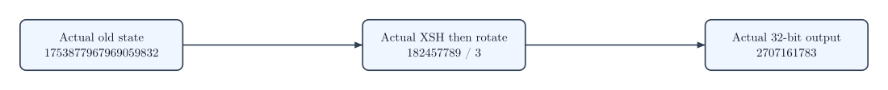
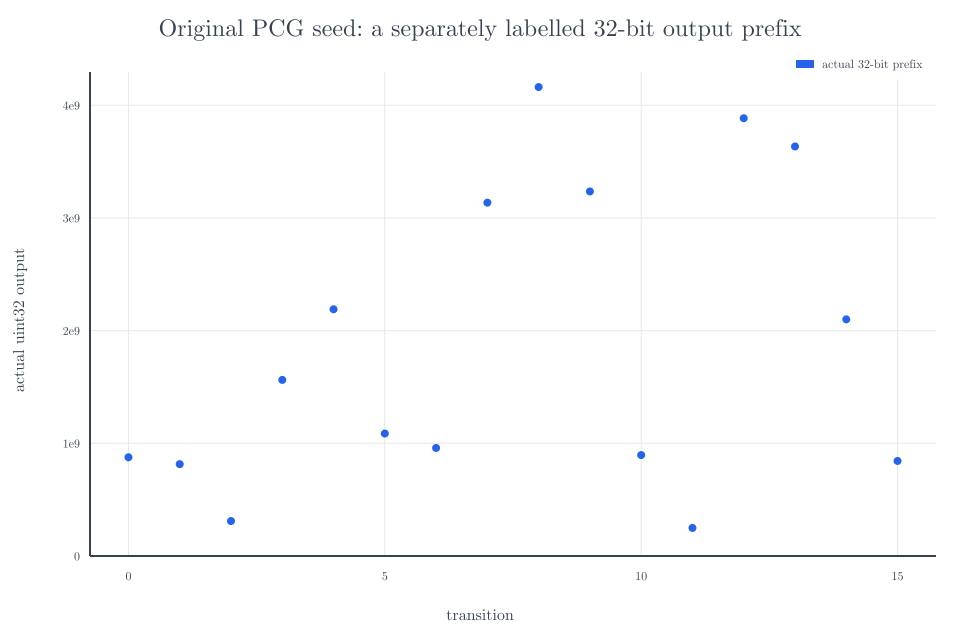
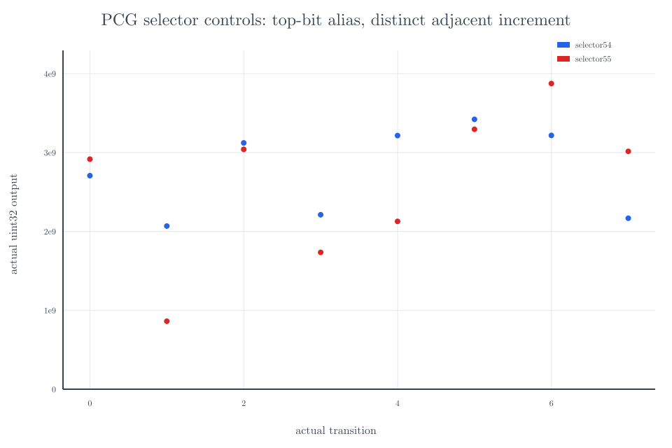
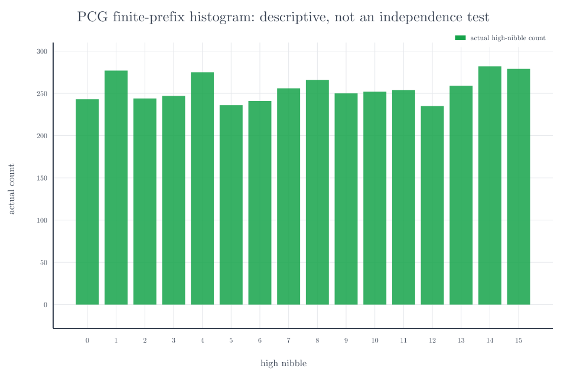

PCG32: actual XSH-RR operands
Abstract
The old64-bit state supplies the xorshift and rotation; the LCG simultaneously advances modulo2^64 with an odd increment. Each native next_u64 call concatenates two consecutive32-bit outputs, first in the high half. The selectable increment has only63 effective selector bits: selectors differing in bit63 alias. Distinct increments are not a guarantee of statistical independence. This simulation generator is not a cryptographic primitive. The author reference supplies the32-bit construction. No dataset is needed.
Mechanism and scope
The old64-bit state supplies the xorshift and rotation; the LCG simultaneously advances modulo2^64 with an odd increment. Each native next_u64 call concatenates two consecutive32-bit outputs, first in the high half. The selectable increment has only63 effective selector bits: selectors differing in bit63 alias. Distinct increments are not a guarantee of statistical independence. This simulation generator is not a cryptographic primitive. The author reference supplies the32-bit construction. No dataset is needed.
A tiny actual producing history
The table and native diagram use the same producing run. Captured records own their values; the report does not reconstruct the algorithm.
#include <dm/dm.hpp>
int main() {
std::filesystem::create_directories("build");
dm::random::Pcg32 rng(42, 54);
auto t = rng.next_u32_trace();
std::print("| before | after | xorshifted | rotation | output |\n| ---: | ---: | ---: | ---: | ---: " "|\n| {} | {} | {} | {} | {} |\n",
t.before, t.after, t.xorshifted, t.rotation, t.output);
dm::graphics::Diagram d;
d.node("n0", {0, 0}, std::format("Actual old state\n{}", t.before));
d.node("n1", {8, 0},
std::format("Actual XSH then rotate\n{} / {}", t.xorshifted,
t.rotation));
d.node("n2", {16, 0}, std::format("Actual 32-bit output\n{}", t.output));
d.edge("n0", "n1").edge("n1", "n2");
d.save_svg("build/pcg32_tiny.svg");
}| before | after | xorshifted | rotation | output |
|---|---|---|---|---|
| 1753877967969059832 | 3118741472915405573 | 182457789 | 3 | 2707161783 |

The original fixture, retained
This complete program retains the original inputs, seed and substantive experiment. Any added display prefix is explicitly separate from the original random call schedule.
#include <dm/dm.hpp>
int main() {
std::ostringstream original_output;
auto *original_cout = std::cout.rdbuf(original_output.rdbuf());
std::filesystem::create_directories("build");
datamunge::random::Pcg32 rng(0xC0FFEEULL);
std::cout << "raw word = " << rng.next_u64() << "\n" << std::fixed <<
std::setprecision(6) << "exponential(rate=4) = " <<
rng.exponential(4.0) << "\n" << "Bernoulli(0.3) = " <<
rng.bernoulli(0.3) << "\n";
auto p = dm::graphics::RPlot::create();
dm::random::Pcg32 sampled(0xC0FFEEULL);
std::vector<double> x, y;
for (int i = 0; i < 16; ++i) {
x.push_back(i);
y.push_back(sampled.next_u32_trace().output);
}
p.points(x, y, "actual 32-bit prefix", {37, 99, 235}, 4).title(
"Original PCG seed: a separately labelled 32-bit output prefix").x_label("transition").y_label("actual uint32 output");
p.y_limits(0, 4294967295.0);
p.y_ticks({0, 1e9, 2e9, 3e9, 4e9}, {"0", "1e9", "2e9", "3e9", "4e9"});
p.save_svg("build/pcg32_original.svg");
std::cout.rdbuf(original_cout);
std::print("| Original computed output |\n| --- |\n");
std::istringstream lines(original_output.str());
std::string line;
while (std::getline(lines, line)) {
while (!line.empty() && line.back() == ' ') line.pop_back();
if (!line.empty()) std::print("| `{}` |\n", line);
}
}| Original computed output |
|---|
raw word = 3763436240344971625 |
exponential(rate=4) = 0.018741 |
Bernoulli(0.3) = 0 |

Controls and boundary cases
#include <dm/dm.hpp>
int main() {
std::filesystem::create_directories("build");
dm::random::Pcg32 a(42, 54), alias(42, 54ULL + (1ULL << 63)), other(42, 55);
std::vector<double> x, y, z;
std::print("| draw | selector54 | top-bit alias | selector55 |\n| ---: | ---: | ---: | ---: |\n");
for (int i = 0; i < 8; ++i) {
auto u =
a.next_u32_trace().output, v =
alias.next_u32_trace().output, w = other.next_u32_trace().output;
x.push_back(i);
y.push_back(u);
z.push_back(w);
std::print("| {} | {} | {} | {} |\n", i, u, v, w);
}
auto p = dm::graphics::RPlot::create();
p.points(x, y, "selector54", {37, 99, 235}, 4).points(x, z, "selector55",
{220, 38, 38}, 4).title("PCG selector controls: top-bit alias, distinct adjacent increment").x_label("actual transition").y_label("actual uint32 output");
p.y_limits(0, 4294967295.0);
p.y_ticks({0, 1e9, 2e9, 3e9, 4e9}, {"0", "1e9", "2e9", "3e9", "4e9"});
p.save_svg("build/pcg32_controls.svg");
}| draw | selector54 | top-bit alias | selector55 |
|---|---|---|---|
| 0 | 2707161783 | 2707161783 | 2916272015 |
| 1 | 2068313097 | 2068313097 | 861791403 |
| 2 | 3122475824 | 3122475824 | 3040754364 |
| 3 | 2211639955 | 2211639955 | 1734582715 |
| 4 | 3215226955 | 3215226955 | 2127168635 |
| 5 | 3421331566 | 3421331566 | 3295082143 |
| 6 | 3217466285 | 3217466285 | 3875122625 |
| 7 | 2167406445 | 2167406445 | 3015335230 |

Producing work and finite observations
#include <dm/dm.hpp>
int main() {
std::filesystem::create_directories("build");
dm::random::Pcg32 r(42, 54);
std::vector<double> v(16, 0);
for (int i = 0; i < 4096; ++i)
++v[r.next_u32_trace().output >> 28];
std::vector<std::string> labels;
for (int i = 0; i < 16; ++i)
labels.push_back(std::to_string(i));
std::print("Actual first4096 high-nibble counts: `{}`.\n", v);
auto p =
dm::graphics::RPlot::barplot(v, labels, "actual high-nibble count");
p.title("PCG finite-prefix histogram: descriptive, not an independence test").x_label("high nibble").y_label("actual count");
p.save_svg("build/pcg32_work.svg");
}Actual first4096 high-nibble counts: [243, 277, 244, 247, 275, 236, 241, 256, 266, 250, 252, 254, 235, 259, 282, 279].

API and interpretation
All four blocks are complete editable C++ programs. Numerical tables retain raw native values; figures display only those returned records. Trace limits count documented logical records or scalar entries, not peak bytes or wall-clock work. Validation is complete before unchecked indexing; captured histories are educational owned storage. A returned result is interpreted under the algorithm-specific scope above, without a universal optimality, convergence or statistical-quality claim.
Verification
This ten-report batch passes 89 CTest cases, 20 ASan/UBSan cases with all ten
producing families directly instrumented, 62 compiled and executed public
examples, 200/200 scoped file definitions plus 15/15 exact PCG class
definitions, and ten representative clangd hovers. Independent Python
hashlib/HMAC and arbitrary-integer PCG checks verify 75189 records with 123243
checks. Native independent per-pixel visibility, exhaustive prefix reversals,
quadratic LIS, integer perceptron updates, sampled-label tail counts and
exhaustive Boolean-cover checks supplement frozen valid-input comparisons for
all ten producers. Ten checkout and ten byte-identical installed development
headers compile independently; an installed-header native consumer links and
runs. All 40 complete programs execute; all 40 native figures have been visually
reviewed. HTML/Markdown exports preserve computed result rows and identical
image bytes. These are scoped native checks. Receipts:
build/mepml-conversion/batch-274-283/.